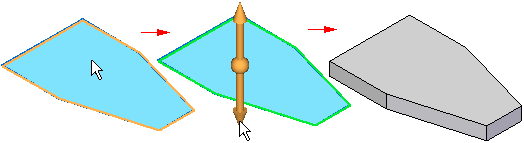

Constructing synchronous features using the Select tool
You can construct both extruded and revolved synchronous features using the Select tool. You access the Select tool using the Select command on the Home tab.
After you draw a valid sketch element, such as a sketch region, you can use the Select tool to quickly extrude or revolve a feature that adds or removes material based on cursor position or options you set.

When you construct synchronous features using the Select tool, the first step is to select the sketch elements you want to use. After you select a valid sketch element, you can specify whether you want to construct an extruded or revolved feature.